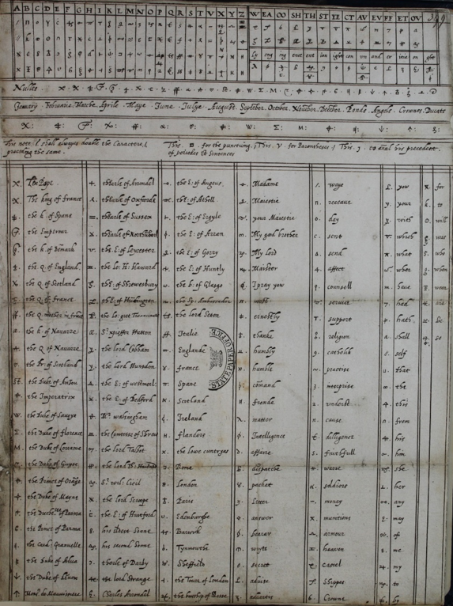
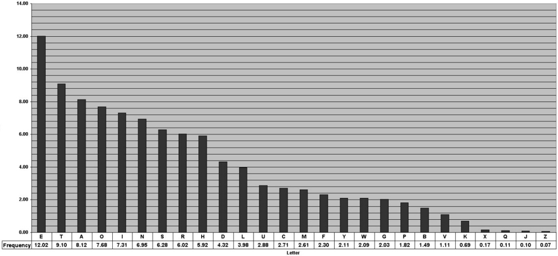

Babington-Code
Der Babington-Cipher war einer der ersten bekannte Fälle, in denen ein geknackter Code zum Tode eines Menschen geführt hat. In diesem Fall war dies Maria Stuart, die ehemelige Königin von Schottland. Seit 19 Jahren in England gefangen gehalten mit keiner Erlaubnis mit der Aussenwelt zu kommunizieren, tat dies dennoch mithilfe des Babington-Codes, welcher in Bierfässern hinein- und hinausgeschmuggelt wurde. Als politische Gefangene war Maria Stuart bereits unter Verdacht der Verschwörung, aber um eine Todesstrafe zu rechtfertigen wurden beweise benötigt. Diese Beweise kamen in Form des geknackten Babington-Codes. Am 6. Juli 1586 schrieb Anthony Babington Maria Stuart eine verschlüsselte (und im geheimen geknackte) Botschaft zum Plan zum Mord von Queen Elizabeth, welchem Sie am 17. Juli zustimmte. Am 8. Februar 1587 wurde Sie geköpft, nachdem die entschlüsselten Briefe in einem Gerichtsverfahren gegen sie verwendet wurden.
Die Verschlüsselung funktionierte wie folgt:
Die Zeichen des Alphabetes wurden mit Symbolen ersetzt. Hierbei hatte das Alphabet nur 23 Zeichen (kein J, V oder W). Zudem gab es 36 Codewörter (THE, AND, OF, QUEEN, ELIZABETH, etc.), welche das Brechen der Verschlüsselung komplizierter machten. 4 Symbole waren Fallen, bedeutungslos und nur zur Ablenkung vorhanden. 1 Symbol war ein «Doppler», welches Wiederholungen von Symbolen markierte, aber weniger offensichtlich machte.
In dem folgenden Bild ist eine Übersicht der Symbole festgehalten.

Geknackt wurde die Verschlüsselung durch einen Prozess, welcher als Häufigkeitsanalyse bekannt ist. Hierbei kann bei einem genügend grossen Text die Häufigkeit der Symbole analysiert werden, und mit den englischen Buchstaben abgeglichen werden. Danach wird klar, welche Zeichen welchen Buchstaben entsprechen. Der Babington-Code enthielt einige Fallen (die Null-Zeichen, Doppler und Zeichen für ganze Wörter), aber es gelang dennoch ihn zu entschlüsseln.

Verteilung der Buchstaben nach Häufigkeit in der englischen Sprache
weiter